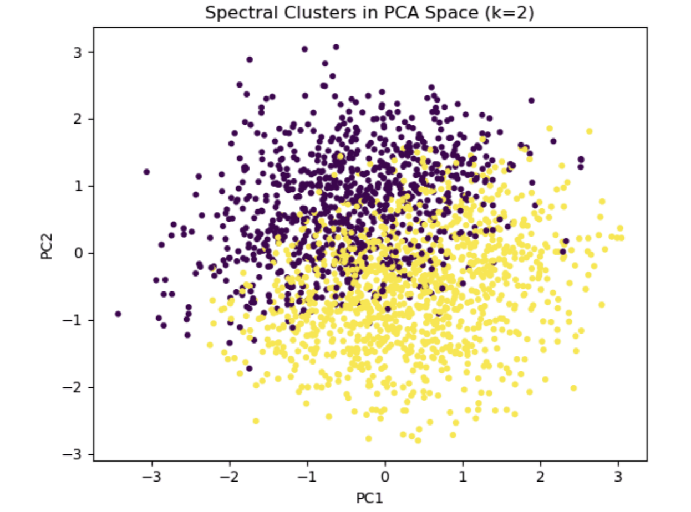

Projects focused on unsupervised learning, clustering algorithms, association rule mining, and pattern discovery across large real-world datasets.

Compared 6 clustering methods, including K-Means, HAC, GMM, DBSCAN, Spectral, and graph-based clustering, on 100K health records. Then mined 541K retail transactions to identify product combinations with meaningful lift.